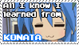

|
hello and welcome to konata zone! i think this layout looks nice with a set theme, not necessarily konata. i use this box as the main main content for my index! extra: info here. there are a lot of links to the left, but you can add/remove as many as you want. graphics from here! just try to keep this section somewhat limited for better sizing. optimized for 1920x1080 chrome. zoom out to 80% for firefox viewing. |
main ...→
me ...→
you ...→




WELCOME
more space waow!
example todo list
for exmaples of what I added to this section, you can look at my site, or you can do whatever else you'd like here! it's pretty small, but you can edit the code to make it whatever size you want B-)
example todo list
- create more art!
- make those noodles i love.
- buy salmon...